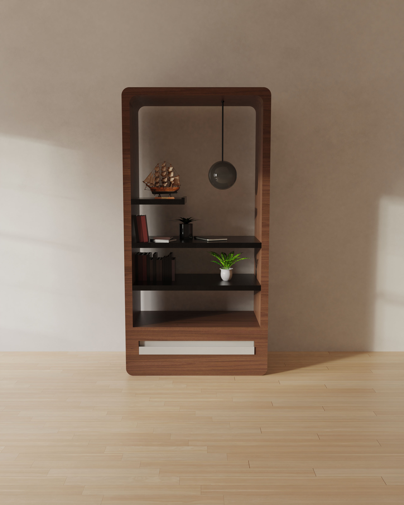

This shelf is designed as a combination of storage and integrated lighting, creating both a functional and atmospheric element within the space. The form is defined by continuous lines and soft transitions, resulting in a clean yet expressive architectural silhouette.
The entire structure is crafted from oak wood, bringing warmth, natural texture, and a refined visual quality to the design.
An integrated lighting system is embedded in the frame, emitting a soft, diffused glow.
Rather than functioning as a conventional storage unit, the design merges furniture and lighting into a single composition.